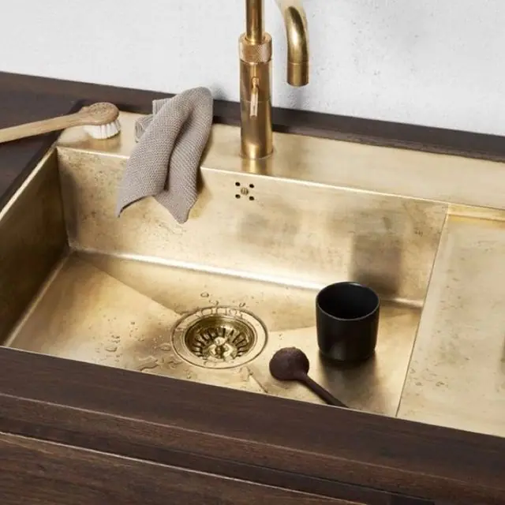
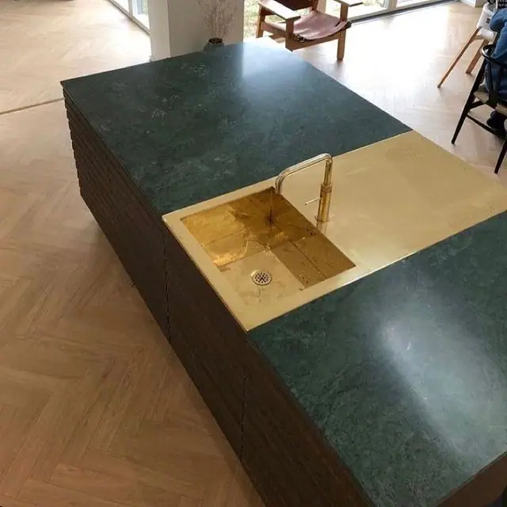
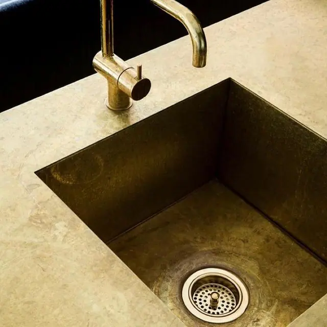

The kitchen sink: one of the most utilitarian objects in any home. Unless, of course. it’s brass . The gold-coloured credentials of this wonderful metal add instant richness to a room, whatever the style. Modern and minimalist, timeless and traditional – all benefit from the addition of a little brass. Scroll through these sumptuous examples and see how this golden metal has the ability to lift the humble sink to centrepiece status.
- Dark Wood
Subtly-mottled aged brass pairs beautifully here with the seriousness of a dark and moody wood. Deep, chocolatey tones and the bold brass create an aesthetic that’s contemporary, with a hint of mid-century glamour.
2. Dramatic Granite

We created this bespoke inlaid sink for our customer’s beautiful granite-top kitchen island using our Berkshire bronzed brass. They chose to have a wide band of the metal running across the width of the island for added impact.
3. Hammered Brass
Hammered brass brings interest and tactility. Here, the dimpled effect is shown all over the chunky sink, both inside and out. Aged brass tiles on the splashback behind switch up the texture but stick to the brass theme.
4. Perfectly Practical
This clever sink comes with built-in space-saving features, like a draining rack and tea towel rail. Everything, including the taps and even the plug, is in the same aged brass finish, making a uniform, colour block statement.
5. Brushed Brass
This deep, brushed brass Belfast-style sink is ready to for everything the kitchen can throw at it. Flanked by deep navy cabinetry and veined marble worktops, it’s a focal point of the room as well as a practical must-have.
6. Texture Takeover
The depth of tones in this stunning wooden cabinetry is mirrored in the aged brass sink, building a textual theme that runs throughout this calming kitchen. Walls are kept white, because no fuss is needed here.
7. Terrazzo and Gold
Whether it’s on walls or floors, there’s no getting away from terrazzo interiors at the moment. Brass might not be the first material you’d think of pairing with the iconic pattern, but here’s proof it absolutely works.
8. Vintage Depth
It’s hard to describe what a perfect match midnight blue and brass are for each other, but then along comes a picture like this. This hefty, double sink looks just the part in this quirky, vintage-style kitchen.
9. Clean Lines
Angular taps and simplistic design here show that brass is just as at home in an ultra-modern, slick kitchen as it is in a quirky, more bohemian style room.
10. Prim and Polished
Brass doesn’t have to be aged to bring drama, as this standout sink proves. White and brass is one of our favourite colour combinations, and this natural brass sink gleams against its marble backdrop.
11. Black and Gold
Not strictly brass, this smart sink is finished in black granite, but it makes the list for how well the stone combines with the metal. This would be an excellent way to introduce brass to a monochromatic kitchen design.
12. All that Glitters
Of course, one of the looks that brass is capable of is all-out glitz and glamour. This Art Deco set-up shows the glitzy potential of polished brass, with a shimmering drop-in sink and matching mixer taps.
13. Antique Brass
There’s a genuine salvaged feel to this antique style aged brass sink. Framed by vivid blue stone, it’s testament to the beauty and integrity of patinated brass.
14. Close-Up Detail

We’re finishing the list of with another one of our very own bespoke creations. Once again, this uses our much-loved Berkshire aged brass , offering a unique finish that you can really see in this close-up shot.
Are you interested in adding a natural brass or aged brass sink to your kitchen design? Contact us for a tailored quote. And you can view all of our brass finishes here .


If you can dream it, we’ll make it.
Bars, balustrades, staircases, worktops, cladding and pieces that don’t have a name yet. Our designers and craftspeople work in brass, copper, zinc and steel, and alongside wood.